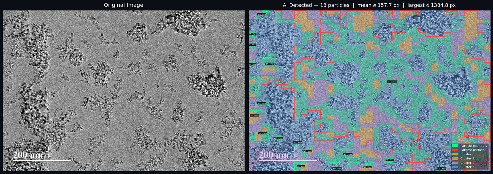
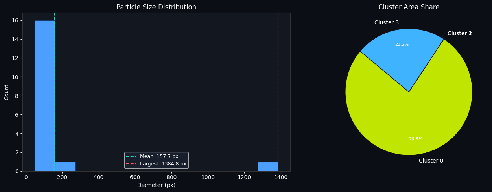
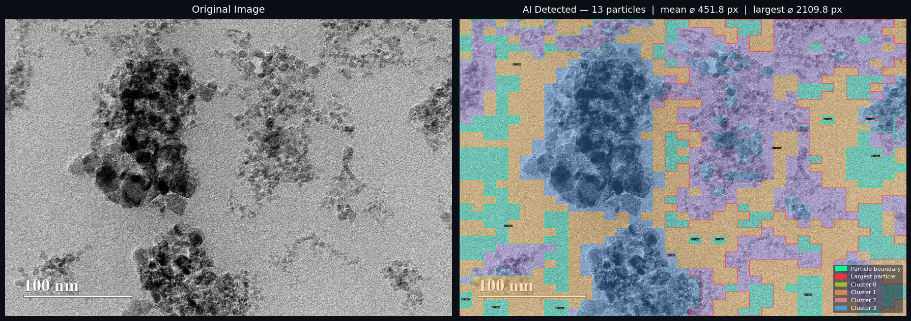
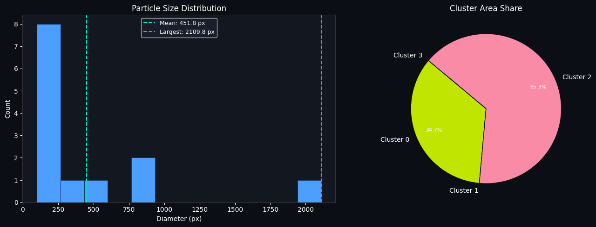

02 / Experimental Outputs
Segmentation Pipelines & Results
Comparing feature extraction using DINOv2 (self-supervised Vision Transformer) against the Segment Anything Model (SAM) to identify particle-like structures in microscopy images — without manual segmentation masks.
Raw Image
↓
ViT Feature Extraction
↓
Clustering / Prompting
↓
Auto-Segmentation
↓
Particle Analytics
Experiment Set A: Clustering Analysis
Original EM input alongside AI-detected clusters and particle size distributions.




Experiment Set B: SAM Auto-Segmentation
Zero-shot automated mask generation using the Segment Anything Model.


Current Limitations
- Evaluated primarily on public/synthetic datasets; expert biological validation is required.
- Pixel measurements are in raw units and not yet calibrated to physical microscopy scales (nm/µm).
- These represent early feasibility studies rather than production-grade lab software.